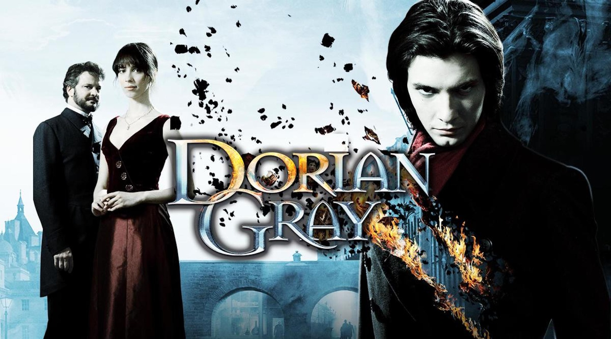

REZUMAT:
Povestea incepe in studioul de arta al lui Basil Hallward, care discuta despre o pictura actuala cu prietenul sau spiritual si amoral Lord Henry Wotton. Henry crede ca tabloul, un portret al unui tanar extraordinar de frumos, ar trebui afisat, dar Basil nu este de acord, temandu-se ca obsesia sa pentru subiectul portretului,Dorian Gray , poate fi vazut in lucrare. Dorian soseste apoi si este fascinat, in timp ce Henry isi explica credinta ca ar trebui sa traiesti viata la maximum, dandu-si impulsurile. Henry subliniaza, de asemenea, ca frumusetea si tineretea sunt trecatoare, iar Dorian declara ca si-ar da sufletul daca portretul ar deveni batran si incretit in timp ce el va ramane tanar si frumos. Vasile ii da pictura lui Dorian.
Henry decide sa preia proiectul de modelare a personalitatii lui Dorian. Cateva saptamani mai tarziu, Dorian ii spune lui Henry ca s-a indragostit de o actrita, Sibyl Vane, datorita marii sale frumusete si talentului actoricesc. Henry si Basil merg cu el la un teatru prost pentru a vedea Sibila, dar spectacolul ei este teribil. Sibyl ii explica lui Dorian ca acum, cand stie ce este iubirea reala, nu se mai poate preface ca se indragosteste pe scena. Dorian este respins si nu mai vrea sa aiba nimic de-a face cu ea. Cand se intoarce acasa, vede o expresie cruda pe fata portretului sau si decide sa caute iertarea Sibilei. Cu toate acestea, Henry ajunge a doua zi cu stiri ca Sibyl s-a sinucis in noaptea precedenta si il convinge pe Dorian ca nu exista niciun motiv pentru care sa se simta rau in legatura cu asta.
Dorian are portretul scos la mansarda. Henry ii trimite lui Dorian o carte pe care o considera otravitoare si fascinanta (criticii au sugerat ca ar putea fi Against the Grain de Joris-Karl Huysmans ). Sub influenta cartii, Dorian isi petrece urmatorii 18 ani in cautarea excesului capricios si sibaritic si devine din ce in ce mai atras de rau. El viziteaza frecvent portretul, observand semnele imbatranirii si ale coruptiei care apar, desi el insusi ramane fara cusur.
Intr-o seara, da peste Vasile, care ii spune ca exista zvonuri ca ar fi distrus viata si reputatia multor oameni. Dorian, insa, refuza sa accepte vina. Basil declara ca in mod clar nu il cunoaste pe Dorian, care raspunde ducandu-l la pod pentru a vedea portretul. Pictura a devenit oribila. Basil ii spune lui Dorian ca, daca aceasta este o reflectare a sufletului sau, el trebuie sa se pocaiasca si sa se roage pentru iertare, iar un dorian brusc infuriat il ucide pe Basil. El il santajeaza pe un alt fost prieten pentru a elimina corpul.
Dorian merge la o groapa de opiu, unde il gaseste fratele razbunator al Sibilei, James, dar faptul ca Dorian apare inca destul de tanar il descurajeaza de la actorie. Cu toate acestea, un alt patron al barlogului dezvaluie mai tarziu varsta lui Dorian. La o petrecere de vanatoare ulterioara la mosia tarii lui Dorian, unul dintre vanatori il impusca si il ucide din greseala pe James, care se ascundea intr-o desis.